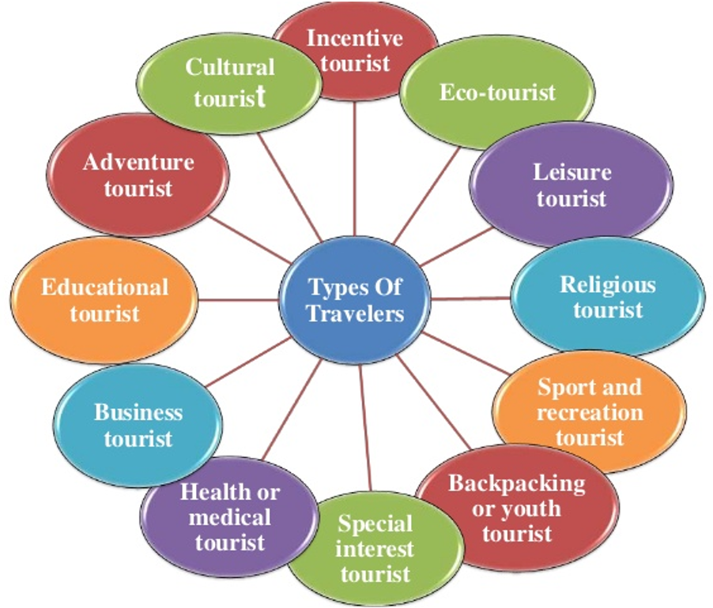

Ni Wayan Sumartini Saraswati
Desember, 2023
MEMAHAMI WISATAWAN DENGAN BIG DATA ANALYTICS
RAGAM WISATAWAN
Memahami karakteristik wisatawan pada industri pariwisata dapat memberikan banyak manfaat dalam kaitannya menentukan strategi pemasaran yang tepat. Baik wisatawan domestik maupun wisatawan manca negara dapat dikelompokkan berdasarkan tujuan berwisata sebagai berikut (Prayitno, 2018) :
-
Para Spiritualis
Para Spiritualis adalah orang-orang yang merencanakan perjalanan ke tempat tertentu untuk kebutuhan spiritual dan jiwa mereka.
-
Penikmat Pesta
Menghadiri festival, dan pusat keramaian lainnya adalah tujuan dari tipe wisatawan ini. Menikmati musik dan berdansa adalah beberapa kegiatan yang menjadi minat dari tipe wisatawan ini.
-
Sosialita
Tipe wisatawan sosialita adalah orang-orang yang pergi ke tempat-tempat yang dikenal dengan spot instagramablenya seperti di pantai, gunung, taman, dan beberapa landmark ikonik lainnya.
-
Para Petualang
Tipe wisatawan ini pergi ke tempat-tempat menantang yang menguji adrenalin mereka.
-
Backpacker
Para Backpacker adalah orang-orang yang terobsesi untuk pergi mengunjungi banyak tempat termasuk tempat baru maupun tempat yang mainstream. Biasanya tipe wisatawan ini berusaha pergi ke suatu tempat dengan biaya murah.
Sedangkan berdasarkan destinasi wisata maka wisatawan dapat dibagi menjadi :
- Wisatawan budaya (cultural tourist)
- Wisatawan alam (OTA)
- Wisatawan petualang
Beberapa penelitian menekankan bahwa wisatawan budaya berbeda dari wisatawan dengan tujuan rekreasi. Wisatawan budaya tidak puas dengan konsumsi dangkal mengenai elemen budaya dari destinasi, tetapi memiliki keinginan yang serius untuk belajar tentang destinasi dan secara aktif mengejar pemahaman dan pengalaman budaya. Untuk wisatawan budaya berdasarkan (Qi et al., 2018) dapat dibagi menjadi 5 tipologi
- Wisatawan budaya yang memiliki tujuan budaya yang memiliki sentralitas tinggi tentang budaya dan berusaha untuk memiliki pengalaman budaya yang mendalam.
- Wisatawan budaya yang melihat-lihat yang memiliki sentralitas tinggi tetapi puas dengan pengalaman yang dangkal.
- Wisatawan budaya kasual yang memiliki sentralitas sederhana dan juga mencari pengalaman yang dangkal.
- Wisatawan budaya insidental yang memiliki sentralitas rendah dan tidak benar-benar mencari pengalaman budaya.
- Wisatawan budaya kebetulan yang juga memiliki sentralitas rendah dalam motivasinya, jika ada, tetapi kebetulan mengalami pengalaman budaya yang berarti di tempat tujuan.
Wisatawan Menonton Tari Kecak Bali, Sumber (Kemenparekraf/Baparekraf RI, 2021)
Memahami karakteristik wisatawan memberikan dukungan keputusan lebih baik bagi pemangku kepentingan dalam menentukan layanan yang akan ditawarkan kepada wisatawan.
MEMAHAMI KARAKTER WISATAWAN DENGAN BIG DATA ANALYTICS
Dalam artikel ini kami akan membahas bagaimana rancang minimal sebuah BI system yang dapat diterapkan oleh sebuah perusahaan. Secara umum kebutuhan fungsional sistem dapat didefinisikan sebagai berikut :
Prediksi perilaku masa depan wisatawan tidak didasarkan pada data statistik biasa, tetapi data pribadi yang nyata. Orang dapat dengan mudah berasumsi bahwa wisatawan dengan anak usia sekolah merencanakan perjalanan selama liburan sekolah berkat analisis data berdasarkan log web atau komunikasi media sosial, tenaga pemasaran dapat dengan mudah menghubungi orang yang tepat (orang tua anak sekolah). Kreasi pemasaran untuk grup ini akan berbeda dari yang ditujukan kepada grup pelanggan potensial lainnya (lansia, lajang, dll.). Selain itu, pelaku pariwisata dapat menjual produk yang sesuai dengan benar tepat pada saat orang tua merencanakan perjalanan. Penggunaan data dari berbagai sumber memungkinkan pembuatan profil pelanggan sedemikian rupa sehingga aktivitas penjualan diarahkan ke kelompok sasaran yang dipilih secara tepat. Penyedia layanan pariwisata dapat mempersempit audiens berdasarkan demografi serta keputusan real-time (Kachniewska, 2019).

Tipe Wisatawan, Sumber : (Types Of Tourists Pdf - Indonesia Culture, Culinary and Tourism, 2021)
Big data analytics juga dapat digunakan untuk memperbaiki layanan pariwisata. Misalkan dalam menentukan apakah akan dibuka rute penerbangan langsung antar dua daerah, berdasarkan analisis data penerbangan sebelumnya. Juga menentukan kapan akan menjual dan berapa tarifnya sehingga pelayanan kepada wisatawan menjadi semakin baik.
Memperbaiki layanan dari destinasi wisata maupun sarana penunjang lainnya juga bisa dilakukan berdasarkan kajian review wisatawan. Big data analytics dapat memberikan gambaran hal apa yang disukai dan tidak disukai wisatawan termasuk demografi dari wisatawan yang memberikan review seperti usia, gender, negara, dan apakah mereka bepergian sendiri, berpasangan atau bersama keluarga. Misal sebuah obyek wisata populer dengan review kata kunci “nice photography” dengan pengunjung yang didominasi dari negara A dan tipe wisatawan bepergian dengan keluarga.
Dari analisis data tersebut pemangku kepentingan bisa memperoleh informasi karakter dan kepuasan wisatawan akan pengalaman selama berwisata. Dari analisis big data kita juga bisa mendapatkan informasi proporsi dari berbagai tipe wisatawan. Menggabungkan informasi tersebut dengan data konsumsi wisatawan selama berkunjung dapat memberikan gambaran arah industri wisata ke depannya. Lebih jauh lagi informasi ini dapat memberikan masukan analisis kekuatan, kelemahan, peluang dan ancaman dari industri wisata tersebut.